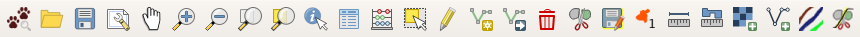

Použití
Výstupy vznikly v rámci projektu číslo VI20172020088 „Využití vyspělých technologií a čichových schopností psů pro zvýšení efektivity vyhledávání pohřešovaných osob v terénu“ (dále jen „projekt Pátrač“), který byl řešen v období 2017 až 2021 s finanční podporou Ministerstva vnitra ČR z programu bezpečnostního výzkumu.
Základní ovládání

Aplikace je rozdělena do šesti částí. Na obrázku jsou označeny čísly
- Nabídka. Obsahuje možnosti jako je uložení projektu a konfiguraci.
- Nástroje. K dispozici je základní sada nástrojů pro pohyb v mapě a manipulaci s objekty v mapě.
- Panel vrstev. Umožňuje zobrazovat nebo skrývat vrstvy a jejich další konfiguraci.
- Mapové pole. Obsahuje samotnou mapu.
- Panel Pátrač. Základní funkce nástroje Pátrač.
- Panel zpráv. Informace o průběhu zpracování, případně chyby.
Nástroje
| 1 | 2 | 3 | 4 | 5 | 6 | 7 | 8 | 9 | 10 | 11 | 12 | 13 | 14 | 15 | 16 | 17 | 18 | 19 | 20 | 21 | 22 | 23 | 24 | 25 | 26 |

- Otevření panelu s průvodcem.
- Otevření existujícího projektu.
- Uložení aktuálního projektu.
- Příprava a tisk mapy.
- Posun mapy (Je možno také kolečkem myši - zmáčknu a táhnu).
- Přiblížení mapy. (Je možno také kolečkem myši - točím od sebe).
- Oddálení mapy. (Je možno také kolečkem myši - točím k sobě).
- Přiblížení na rozsah celé vrstvy.
- Přiblížení na rozsah vybraných objektů ve vrstvě.
- Zobrazení informací o objektu (kliknutím do mapy).
- Zobrazení informací o objektech v podobě tabulky.
- Kalkulátor polí v tabulce (mohu hromadně měnit hodnoty pro více řádků).
- Výběr objektu tažením obdélníku v mapě.
- Zahájení a ukončení editace objektů v mapě.
- Vložení objektu do vrstvy.
- Posun objektu.
- Smazání objektu.
- Rozdělení objektu na dva.
- Uložení editace.
- Přečíslování sektorů.
- Měření vzdáleností.
- Měření ploch.
- Přidání další rastrové vrstvy (např. letecký snímek).
- Přidání další vektorové vrstvy (např. KML soubor).
- Přidání vektorových vrstev pro dělení sektorů.
- Rozdělení sektoru pomocí existující linie.
Pokud vidíte další nástroje, znamená to, že máte zapnuty další nástrojové lišty. Lišty můžete vypnout tak, že kliknete pravým tlačítkem myši vpravo vedle nástrojů nebo vedle nabídek.
Zavedení zásuvného modulu
Aplikace Quantum GIS by měla startovat s již zavedeným modulem. Může se však stát, že dojde k vypnutí panelu nástrojů. Panel nástrojů se zapne přes nabídku Zásuvné moduly.

Použití zásuvného modulu
V panelu modulu využijeme nejdříve Plán. Ten mimo jiné pomůže vytvořit projekt pátrání.


 ve spodní části panelu pátrač.
ve spodní části panelu pátrač.

 je možné upravovat body pozorování.
je možné upravovat body pozorování.
 zahájíme editaci.
zahájíme editaci. můžeme zahájit kreslení linie, kterou rozdělíme sektor. Kreslení linie probíhá pomocí levého tlačítka myši a ukončuje se pomocí pravého
tlačítka myši. Po dokončení se sektor rozdělí nicméně informace o rozloze (ha) i název sektoru zůstane do doby přečíslování stejná jako u původního sektoru pro všechny nově vzniklé
sektory.
můžeme zahájit kreslení linie, kterou rozdělíme sektor. Kreslení linie probíhá pomocí levého tlačítka myši a ukončuje se pomocí pravého
tlačítka myši. Po dokončení se sektor rozdělí nicméně informace o rozloze (ha) i název sektoru zůstane do doby přečíslování stejná jako u původního sektoru pro všechny nově vzniklé
sektory.
 v toolbaru Pátrač nebo panelu Pátrač provedeme přečíslování sektorů.
v toolbaru Pátrač nebo panelu Pátrač provedeme přečíslování sektorů. vybereme nejdříve sektor.
Následně se přepneme na vrstvu (vodní tok, cesta, průsek), ze které vybereme jeden prvek.
vybereme nejdříve sektor.
Následně se přepneme na vrstvu (vodní tok, cesta, průsek), ze které vybereme jeden prvek.